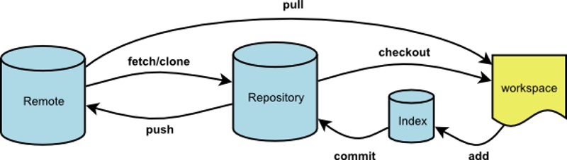

<!DOCTYPE html>
<html>
<head><meta name="generator" content="Hexo 3.8.0">
  <meta charset="utf-8">
  

  
  <title>版本管理工具（git）常用指令 | Gzqqqqq</title>
  <meta name="viewport" content="width=device-width, initial-scale=1, maximum-scale=1">
  
  
  
  <meta name="description" content="1. git pull命令的作用：取回远程主机某个分支的更新，再与本地的指定分支合并。 1$ git pull &amp;lt;远程主机名&amp;gt; &amp;lt;远程分支名&amp;gt;:&amp;lt;本地分支名&amp;gt; 比如，取回origin主机的next分支，与本地的master分支合并，需要写成下面这样。 1$ git pull origin next:master 果远程分支是与当前分支合并，则冒号后面的部分可以省">
<meta name="keywords" content="git">
<meta property="og:type" content="article">
<meta property="og:title" content="版本管理工具（git）常用指令">
<meta property="og:url" content="http://Gzqqqqq.github.io/public/2019/03/28/版本管理工具（git）常用指令/index.html">
<meta property="og:site_name" content="Gzqqqqq">
<meta property="og:description" content="1. git pull命令的作用：取回远程主机某个分支的更新，再与本地的指定分支合并。 1$ git pull &amp;lt;远程主机名&amp;gt; &amp;lt;远程分支名&amp;gt;:&amp;lt;本地分支名&amp;gt; 比如，取回origin主机的next分支，与本地的master分支合并，需要写成下面这样。 1$ git pull origin next:master 果远程分支是与当前分支合并，则冒号后面的部分可以省">
<meta property="og:locale" content="default">
<meta property="og:image" content="http://gzqqqqq.github.io/public/2019/03/28/版本管理工具（git）常用指令/git.png">
<meta property="og:updated_time" content="2019-03-30T01:57:18.489Z">
<meta name="twitter:card" content="summary">
<meta name="twitter:title" content="版本管理工具（git）常用指令">
<meta name="twitter:description" content="1. git pull命令的作用：取回远程主机某个分支的更新，再与本地的指定分支合并。 1$ git pull &amp;lt;远程主机名&amp;gt; &amp;lt;远程分支名&amp;gt;:&amp;lt;本地分支名&amp;gt; 比如，取回origin主机的next分支，与本地的master分支合并，需要写成下面这样。 1$ git pull origin next:master 果远程分支是与当前分支合并，则冒号后面的部分可以省">
<meta name="twitter:image" content="http://gzqqqqq.github.io/public/2019/03/28/版本管理工具（git）常用指令/git.png">
  
    <link rel="alternate" href="/atom.xml" title="Gzqqqqq" type="application/atom+xml">
  
  
    <link rel="icon" href="/images/default-avatar.jpeg">
  
  
    <link href="//fonts.googleapis.com/css?family=Source+Code+Pro" rel="stylesheet" type="text/css">
  
  <link rel="stylesheet" href="/css/style.css">
  <link rel="stylesheet" href="/css/highlight.css">
</head>
</html>
<body>
  <div id="fullpage" class="mobile-nav-right">
    
      <div id="wrapper" title="图片来自网络">
    
    
      <header id="header">
  <div id="nav-toggle" class="nav-toggle"></div>
  <div class="head-box global-width">
    <nav class="nav-box nav-right">
      
        <a class="nav-item" href="/" title>首页</a>
      
        <a class="nav-item" href="/archives" title>归档</a>
      
    </nav>
  </div>
</header>
      <div id="middlecontent" title class="global-width sidebar-right">
        <section id="main"><article id="post-版本管理工具（git）常用指令" class="article global-container article-type-post" itemscope itemprop="blogPost">
  
    <header class="article-header">
      
  
    <h1 class="article-title" itemprop="name">
      版本管理工具（git）常用指令
    </h1>
  

    </header>
  
  <div class="article-meta">
    <a href="/2019/03/28/版本管理工具（git）常用指令/" class="article-date">
  <time datetime="2019-03-28T11:54:37.000Z" itemprop="datePublished">2019-03-28</time>
</a>
    
    
  <ul class="article-tag-list"><li class="article-tag-list-item"><a class="article-tag-list-link" href="/tags/git/">git</a></li></ul>

  </div>
  
    <span id="busuanzi_container_page_pv">
      本文总阅读量<span id="busuanzi_value_page_pv"></span>次
    </span>
  

  <div class="article-inner">
    
    <div class="article-content article-content-doorframe" itemprop="articleBody">
      
       
  	
  	  <h3 id="1-git-pull"><a href="#1-git-pull" class="headerlink" title="1. git pull"></a>1. git pull</h3><p>命令的作用：取回远程主机某个分支的更新，再与本地的指定分支合并。</p>
<div class="highlight-box" autocomplete="off" autocorrect="off" autocapitalize="off" spellcheck="false" contenteditable="true" data-rel="BASH"><figure class="iseeu highlight /bash"><table><tr><td class="gutter"><pre><span class="line">1</span><br></pre></td><td class="code"><pre><span class="line">$ git pull &lt;远程主机名&gt; &lt;远程分支名&gt;:&lt;本地分支名&gt;</span><br></pre></td></tr></table></figure></div>
<p>比如，取回origin主机的next分支，与本地的master分支合并，需要写成下面这样。</p>
<div class="highlight-box" autocomplete="off" autocorrect="off" autocapitalize="off" spellcheck="false" contenteditable="true" data-rel="BASH"><figure class="iseeu highlight /bash"><table><tr><td class="gutter"><pre><span class="line">1</span><br></pre></td><td class="code"><pre><span class="line">$ git pull origin next:master</span><br></pre></td></tr></table></figure></div>
<p>果远程分支是与当前分支合并，则冒号后面的部分可以省略。</p>
<div class="highlight-box" autocomplete="off" autocorrect="off" autocapitalize="off" spellcheck="false" contenteditable="true" data-rel="BASH"><figure class="iseeu highlight /bash"><table><tr><td class="gutter"><pre><span class="line">1</span><br></pre></td><td class="code"><pre><span class="line">$ git pull origin next</span><br></pre></td></tr></table></figure></div>
<p>如果当前分支与远程分支存在追踪关系，git pull就可以省略远程分支名。</p>
<div class="highlight-box" autocomplete="off" autocorrect="off" autocapitalize="off" spellcheck="false" contenteditable="true" data-rel="BASH"><figure class="iseeu highlight /bash"><table><tr><td class="gutter"><pre><span class="line">1</span><br></pre></td><td class="code"><pre><span class="line">$ git pull origin</span><br></pre></td></tr></table></figure></div>
<p>如果当前分支只有一个追踪分支，连远程主机名都可以省略。</p>
<div class="highlight-box" autocomplete="off" autocorrect="off" autocapitalize="off" spellcheck="false" contenteditable="true" data-rel="BASH"><figure class="iseeu highlight /bash"><table><tr><td class="gutter"><pre><span class="line">1</span><br></pre></td><td class="code"><pre><span class="line">$ git pull</span><br></pre></td></tr></table></figure></div>
<h3 id="2-git-push"><a href="#2-git-push" class="headerlink" title="2.git push"></a>2.git push</h3><p>用于将本地分支的更新，推送到远程主机。它的格式与git pull命令相仿。</p>
<div class="highlight-box" autocomplete="off" autocorrect="off" autocapitalize="off" spellcheck="false" contenteditable="true" data-rel="BASH"><figure class="iseeu highlight /bash"><table><tr><td class="gutter"><pre><span class="line">1</span><br></pre></td><td class="code"><pre><span class="line">$ git push &lt;远程主机名&gt; &lt;本地分支名&gt;:&lt;远程分支名&gt;</span><br></pre></td></tr></table></figure></div>
<p>如果当前分支与远程分支之间存在追踪关系，则本地分支和远程分支都可以省略。</p>
<div class="highlight-box" autocomplete="off" autocorrect="off" autocapitalize="off" spellcheck="false" contenteditable="true" data-rel="BASH"><figure class="iseeu highlight /bash"><table><tr><td class="gutter"><pre><span class="line">1</span><br></pre></td><td class="code"><pre><span class="line">$ git push origin</span><br></pre></td></tr></table></figure></div>
<p>如果当前分支只有一个追踪分支，那么主机名都可以省略。</p>
<div class="highlight-box" autocomplete="off" autocorrect="off" autocapitalize="off" spellcheck="false" contenteditable="true" data-rel="BASH"><figure class="iseeu highlight /bash"><table><tr><td class="gutter"><pre><span class="line">1</span><br></pre></td><td class="code"><pre><span class="line">$ git push</span><br></pre></td></tr></table></figure></div>
<p>如果当前分支与多个主机存在追踪关系，则可以使用-u选项指定一个默认主机，这样后面就可以不加任何参数使用git push。</p>
<div class="highlight-box" autocomplete="off" autocorrect="off" autocapitalize="off" spellcheck="false" contenteditable="true" data-rel="BASH"><figure class="iseeu highlight /bash"><table><tr><td class="gutter"><pre><span class="line">1</span><br></pre></td><td class="code"><pre><span class="line">$ git push -u origin master</span><br></pre></td></tr></table></figure></div>
<h3 id="3-git-clone"><a href="#3-git-clone" class="headerlink" title="3.git clone"></a>3.git clone</h3><p>将github上的仓库里面的项目克隆岛本地仓库中</p>
<div class="highlight-box" autocomplete="off" autocorrect="off" autocapitalize="off" spellcheck="false" contenteditable="true" data-rel="BASH"><figure class="iseeu highlight /bash"><table><tr><td class="gutter"><pre><span class="line">1</span><br></pre></td><td class="code"><pre><span class="line">$ git <span class="built_in">clone</span> https://code.buy-key.com/joey/test.git</span><br></pre></td></tr></table></figure></div>
<h3 id="4-git-add"><a href="#4-git-add" class="headerlink" title="4.git add"></a>4.git add</h3><p>将需要提交到远程仓库的文件一起提交到本地仓库的暂存区，等待一起提交至远程</p>
<div class="highlight-box" autocomplete="off" autocorrect="off" autocapitalize="off" spellcheck="false" contenteditable="true" data-rel="BASH"><figure class="iseeu highlight /bash"><table><tr><td class="gutter"><pre><span class="line">1</span><br></pre></td><td class="code"><pre><span class="line">$ git add .</span><br></pre></td></tr></table></figure></div>
<h3 id="5-git-commit"><a href="#5-git-commit" class="headerlink" title="5.git commit"></a>5.git commit</h3><p>将本地仓库中修改或添加的文件上传到远程仓库中</p>
<div class="highlight-box" autocomplete="off" autocorrect="off" autocapitalize="off" spellcheck="false" contenteditable="true" data-rel="BASH"><figure class="iseeu highlight /bash"><table><tr><td class="gutter"><pre><span class="line">1</span><br></pre></td><td class="code"><pre><span class="line">$ git commit -m <span class="string">""</span></span><br></pre></td></tr></table></figure></div>
<h3 id="6-git-branch"><a href="#6-git-branch" class="headerlink" title="6.git branch"></a>6.git branch</h3><p>删除本地分支</p>
<div class="highlight-box" autocomplete="off" autocorrect="off" autocapitalize="off" spellcheck="false" contenteditable="true" data-rel="BASH"><figure class="iseeu highlight /bash"><table><tr><td class="gutter"><pre><span class="line">1</span><br></pre></td><td class="code"><pre><span class="line">$ git branch -D branch_name</span><br></pre></td></tr></table></figure></div>
<h3 id="7-git-checkout"><a href="#7-git-checkout" class="headerlink" title="7.git checkout"></a>7.git checkout</h3><p>创建/切换本地分支</p>
<div class="highlight-box" autocomplete="off" autocorrect="off" autocapitalize="off" spellcheck="false" contenteditable="true" data-rel="BASH"><figure class="iseeu highlight /bash"><table><tr><td class="gutter"><pre><span class="line">1</span><br></pre></td><td class="code"><pre><span class="line">$ git checkout branch_name</span><br></pre></td></tr></table></figure></div>
<p>创建并切换到某个分支上</p>
<div class="highlight-box" autocomplete="off" autocorrect="off" autocapitalize="off" spellcheck="false" contenteditable="true" data-rel="BASH"><figure class="iseeu highlight /bash"><table><tr><td class="gutter"><pre><span class="line">1</span><br></pre></td><td class="code"><pre><span class="line">$ git checkout -b  branch_name</span><br></pre></td></tr></table></figure></div>
<p>在master分支上合并分支：<br>先切换到master分支上<br>再输入命令：git merge 分支名称；</p>
<div class="highlight-box" autocomplete="off" autocorrect="off" autocapitalize="off" spellcheck="false" contenteditable="true" data-rel="BASH"><figure class="iseeu highlight /bash"><table><tr><td class="gutter"><pre><span class="line">1</span><br></pre></td><td class="code"><pre><span class="line">$ git merge <span class="string">'分支名称'</span></span><br></pre></td></tr></table></figure></div>
<h3 id="9-git-init"><a href="#9-git-init" class="headerlink" title="9.git init"></a>9.git init</h3><p>创建本地仓库</p>
<div class="highlight-box" autocomplete="off" autocorrect="off" autocapitalize="off" spellcheck="false" contenteditable="true" data-rel="BASH"><figure class="iseeu highlight /bash"><table><tr><td class="gutter"><pre><span class="line">1</span><br></pre></td><td class="code"><pre><span class="line">$ git init</span><br></pre></td></tr></table></figure></div>
<h3 id="10-git-status"><a href="#10-git-status" class="headerlink" title="10.git status"></a>10.git status</h3><p>查看当前被git管理的文件</p>
<div class="highlight-box" autocomplete="off" autocorrect="off" autocapitalize="off" spellcheck="false" contenteditable="true" data-rel="BASH"><figure class="iseeu highlight /bash"><table><tr><td class="gutter"><pre><span class="line">1</span><br></pre></td><td class="code"><pre><span class="line">$ git status</span><br></pre></td></tr></table></figure></div>
<h3 id="11-git-log"><a href="#11-git-log" class="headerlink" title="11.git log"></a>11.git log</h3><p>查看日志</p>
<div class="highlight-box" autocomplete="off" autocorrect="off" autocapitalize="off" spellcheck="false" contenteditable="true" data-rel="BASH"><figure class="iseeu highlight /bash"><table><tr><td class="gutter"><pre><span class="line">1</span><br></pre></td><td class="code"><pre><span class="line">$ git <span class="built_in">log</span></span><br></pre></td></tr></table></figure></div>
<h3 id="12-git-reset"><a href="#12-git-reset" class="headerlink" title="12.git reset"></a>12.git reset</h3><p>回退到某个版本上</p>
<div class="highlight-box" autocomplete="off" autocorrect="off" autocapitalize="off" spellcheck="false" contenteditable="true" data-rel="BASH"><figure class="iseeu highlight /bash"><table><tr><td class="gutter"><pre><span class="line">1</span><br></pre></td><td class="code"><pre><span class="line">$ git reset --hard</span><br></pre></td></tr></table></figure></div>
<h3 id="13-git-branch"><a href="#13-git-branch" class="headerlink" title="13.git branch"></a>13.git branch</h3><p>查看分支</p>
<div class="highlight-box" autocomplete="off" autocorrect="off" autocapitalize="off" spellcheck="false" contenteditable="true" data-rel="BASH"><figure class="iseeu highlight /bash"><table><tr><td class="gutter"><pre><span class="line">1</span><br></pre></td><td class="code"><pre><span class="line">$ git branch</span><br></pre></td></tr></table></figure></div>
<p></p>

  	
  
</div>
    
      <footer class="article-footer">
        完
      </footer>
    
  </div>
  
    
<nav id="article-nav">
  <div class="article-nav-block">
    
      <a href="/2019/03/29/区分slice、splice、split/" id="article-nav-newer" class="article-nav-link-wrap">
        <strong class="article-nav-caption"></strong>
        <div class="article-nav-title">
          
            区分slice、splice、split
          
        </div>
      </a>
    
  </div>
  <div class="article-nav-block">
    
      <a href="/2019/03/28/ES6中的promise的实现原理/" id="article-nav-older" class="article-nav-link-wrap">
        <div class="article-nav-title">ES6中的promise的实现原理</div>
        <strong class="article-nav-caption"></strong>
      </a>
    
  </div>
</nav>

    
<div id="gitmentContainer"></div>
<link rel="stylesheet" href="https://imsun.github.io/gitment/style/default.css">
<script src="https://imsun.github.io/gitment/dist/gitment.browser.js"></script>
<script>
var gitment = new Gitment({
  owner: '',
  repo: '',
  oauth: {
    client_id: '',
    client_secret: '',
  },
})
gitment.render('gitmentContainer')
</script>

  
  
</article>
</section>
        <aside id="sidebar">
  
    <div class="widget-box">
  <div class="avatar-box">
    
    <h3 class="avatar-name">
      
        椿去湫来
      
    </h3>
    <p class="avatar-slogan">
      如果有来生，我要做一棵树，站成永恒，没有悲欢的姿势。
    </p>
  </div>
</div>


  
    

  
    
  <div class="widget-box">
    <h3 class="widget-title">Tags</h3>
    <div class="widget">
      <ul class="tag-list"><li class="tag-list-item"><a class="tag-list-link" href="/tags/DOM/">DOM</a></li><li class="tag-list-item"><a class="tag-list-link" href="/tags/css/">css</a></li><li class="tag-list-item"><a class="tag-list-link" href="/tags/git/">git</a></li><li class="tag-list-item"><a class="tag-list-link" href="/tags/javascript/">javascript</a></li><li class="tag-list-item"><a class="tag-list-link" href="/tags/node/">node</a></li><li class="tag-list-item"><a class="tag-list-link" href="/tags/vue/">vue</a></li><li class="tag-list-item"><a class="tag-list-link" href="/tags/样例/">样例</a></li><li class="tag-list-item"><a class="tag-list-link" href="/tags/正则表达式/">正则表达式</a></li><li class="tag-list-item"><a class="tag-list-link" href="/tags/私人/">私人</a></li></ul>
    </div>
  </div>


  
    
  <div class="widget-box">
    <h3 class="widget-title">Tag Cloud</h3>
    <div class="widget tagcloud">
      <a href="/tags/DOM/" style="font-size: 10px;">DOM</a> <a href="/tags/css/" style="font-size: 15px;">css</a> <a href="/tags/git/" style="font-size: 10px;">git</a> <a href="/tags/javascript/" style="font-size: 20px;">javascript</a> <a href="/tags/node/" style="font-size: 10px;">node</a> <a href="/tags/vue/" style="font-size: 10px;">vue</a> <a href="/tags/样例/" style="font-size: 10px;">样例</a> <a href="/tags/正则表达式/" style="font-size: 10px;">正则表达式</a> <a href="/tags/私人/" style="font-size: 10px;">私人</a>
    </div>
  </div>

  
    
  <div class="widget-box">
    <h3 class="widget-title">Archives</h3>
    <div class="widget">
      <ul class="archive-list"><li class="archive-list-item"><a class="archive-list-link" href="/archives/2019/04/">April 2019</a></li><li class="archive-list-item"><a class="archive-list-link" href="/archives/2019/03/">March 2019</a></li></ul>
    </div>
  </div>

  
    
  <div class="widget-box">
    <h3 class="widget-title">Recent Posts</h3>
    <div class="widget">
      <ul>
        
          <li>
            <a href="/2019/04/01/详解call、apply、bind/">详解call、apply、bind</a>
          </li>
        
          <li>
            <a href="/2019/03/31/闭包/">闭包</a>
          </li>
        
          <li>
            <a href="/2019/03/31/作用域/">作用域</a>
          </li>
        
          <li>
            <a href="/2019/03/31/this/">this</a>
          </li>
        
          <li>
            <a href="/2019/03/31/执行上下文/">执行上下文</a>
          </li>
        
      </ul>
    </div>
  </div>

  
</aside>
      </div>
      <footer id="footer">
  <div class="foot-box global-width">
    &copy; 2019 Gzqqqqq &nbsp;&nbsp;
    Powered by <a href="http://hexo.io/" target="_blank">Hexo</a>
    &nbsp;|&nbsp;主题 <a href="https://github.com/yiluyanxia/hexo-theme-antiquity">antiquity</a>
    <br>
    <script async src="//busuanzi.ibruce.info/busuanzi/2.3/busuanzi.pure.mini.js"></script>
    <span id="busuanzi_container_site_pv">阁下是第<span id="busuanzi_value_site_pv"></span>个访客</span>
  </div>
</footer>
      <script src="//ajax.googleapis.com/ajax/libs/jquery/2.0.3/jquery.min.js"></script>

<script src="/js/jquery-2.0.3.min.js"></script>

  <link rel="stylesheet" href="/fancybox/jquery.fancybox.css">
  <script src="/fancybox/jquery.fancybox.pack.js"></script>


<script src="/js/script.js"></script>


    </div>
    <nav id="mobile-nav" class="mobile-nav-box">
  <div class="mobile-nav-img mobile-nav-top"></div>
  
    <a href="/" class="mobile-nav-link">首页</a>
  
    <a href="/archives" class="mobile-nav-link">归档</a>
  
  <div class="mobile-nav-img  mobile-nav-bottom"></div>
</nav>    
  </div>
</body>
</html>